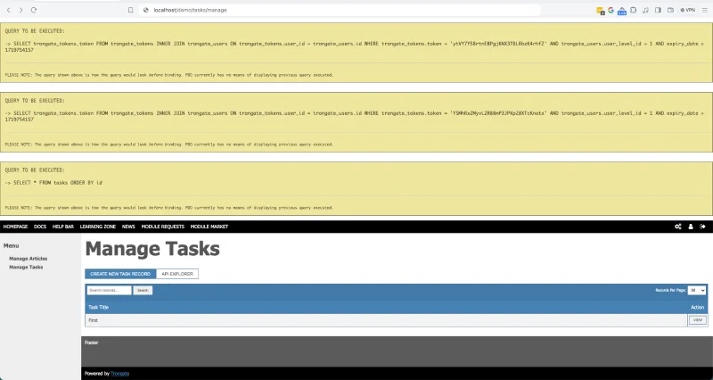

The Trongate Model class includes a 'Debug Mode' feature that allows developers to inspect the raw SQL queries generated by their application. By default, Debug Mode is disabled. To enable it, follow these steps:
Open the Model.php file located in your application's engine directory.
Navigate to the top of the file where you will find a private variable named $debug.
Change the value of $debug from false to true.
For example:
private $debug = true;
With debug mode enabled PDO will display the SQL queries that will be executed by our application.
Debug Mode Screenshot

A screenshot demonstrating a webpage with debug mode enabled.
Trongate utilizes PDO (PHP Data Objects), a flexible and secure PHP extension, for interacting with databases. PDO supports multiple database systems, providing a consistent interface to query databases regardless of the backend. It offers prepared statements to help prevent SQL injection attacks and facilitates efficient database access and management. Debug Mode in Trongate allows developers to preview SQL queries before execution, aiding in debugging and optimizing database interactions.